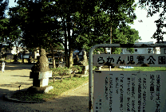
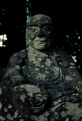
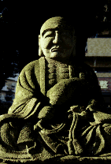
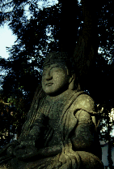
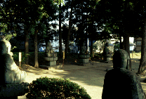
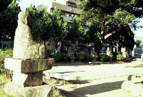

羅漢公園/岩手県盛岡市
  
盛岡市内の公園である。ごく普通の児童公園なのだが、その公園を囲むように3メートル近い十六羅漢の石像が置かれている。
これはかなりミョ−な雰囲気だった。
何故こんなところに羅漢像があるのか。もともとこの地に寺があってそこが燃えてしまったから、というのが種明かしなのだが、それにしても公園と羅漢のとりあわせが奇妙だ。子供達もこんなとこで遊んでたら悪い事できないねえ。
  
1998.7
珍寺大道場 HOME